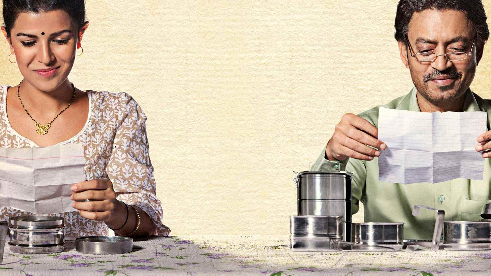

The Lunchbox
IND 2013 (105 minutter)
Laget av
cast:
Genre: romanse, komedie
Summary
Indiske The Lunchbox er en sjelden filmperle som har begeistret et stort internasjonalt publikum med sin originalitet og varme. Filmen vant den prestisjetunge prisen Critics Week Viewers Choice Award under Cannes-festivalen i 2013 I Mumbais travle hverdag bringer en feillevert lunsj to meget forskjellige skjebner sammen. Den noe stillfarne enkemannen Saajan, snart pensjonist, mottar ved en feil lunsjen som husmoren Ila har laget til sin mann. Forvekslingen blir starten på en humoristisk og rørende brevutveksling i lunsjboksene. Saajan og Ila finner et frirom for å utrykke sine innerste tanker, og de små brevene blir etter hvert fylt med varme følelser og spiren til en mulig fremtid hvor lykken skal finnes. Regissør Ritesh Batra, som selv er oppvokst i Mumbai, skildrer både det realistiske og det fantastiske med humor og varme. Rollen som Saajan spilles av Irrfan Kahn, kjent fra kritikerroste filmer som Slumdog Millionaire og Life Of Pi.